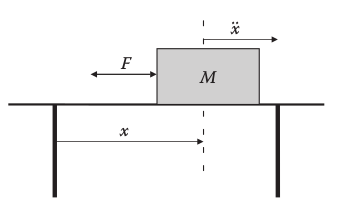
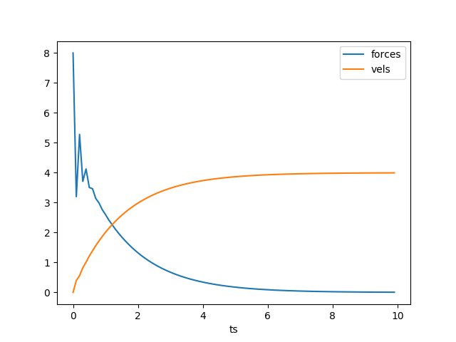
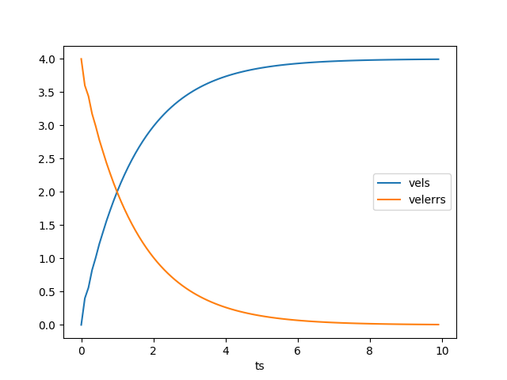

En basit kontrol yöntemi PID kontrol yöntemidir. Bu yaklaşım kontrol edilen mekanizma, süreç, fabrika, vs için elde denklemler elde olmasa bile çoğunlukla işler (mekanizmanın fazla gayrı lineer olmaması kaydıyla). Kabaca elde edilmek istenilen bir parametre hedefi vardır, mesela bu arabanın hızı olabilir, kontrol edilen ise bir gaz pedalı olabilir (pedalın basılma açısı gibi), ve arabanın belli $\Delta t$ aralıklarında hız ölçümüne bakılır, ve en basit formda istenilen hız ile o anda olunan hız arasındaki fark, hataya oranlı bir kontrol uygulaması yapılır. Eğer 60 km/saat ile gidilmek isteniyorsa ama ölçüm 40 km/saat diyorsa aradaki farka oranla gaz pedalına biraz daha basılır.
En basit formda dedik, bazı ekler, o ana kadar olan hataların toplamına oranlı, ya da hatanın önceki hataya göre artışına oranlı da olabilir. Tüm bunlar biraraya koyulunca PİD kontrolünü elde ederiz [1, sf. 42],
$$ u(t) = K_p \cdot e(t) + K_i \cdot \int_0^t e(\tau) \mathrm{d} \tau + f K_d \frac{\mathrm{d} e(t)}{\mathrm{d} t} $$
Yani aslında kontrole edilen parametre ve hedef değişken arasında genelgeçer / hafiften yapay bir ilişki kurmuş oluyoruz. Sabitleri ayarlayarak herhangi bir sistem için bu ilişkinin işlemesini sağlıyoruz, fakat formülsel olarak elimide bir ilişki yok. Bir "hata" büyüklüğüne, onun birkaç formuna bakarak, ona oranla bir kontrol uygulamak PİD yaklaşımının özüdür. Pratikte iyi işler, bu sebeple oldukca popülerdir.
Bir sistemi kontrol etmek icin birden fazla degisken olabilir, ustteki formulu o sebeple objesel yaklasimla kodlamak iyi olabilir. Her degisken icin ayri bir PID objesi yaratilabilir, bu objeler eski hatalari, takip ettikleri degiskenleri hatirlarlar,
class PID:
def __init__(self, dt, Kp, Ki, Kd):
self.Kp = Kp
self.Ki = Ki
self.Kd = Kd
self.dt = dt
self.errSum = 0
self.lastErr = 0
def compute(self, setpoint, input):
error = setpoint - input
self.errSum += (error * self.dt)
dErr = (error - self.lastErr) / self.dt
output = self.Kp * error + self.Ki * self.errSum + self.Kd * dErr
self.lastErr = error
return output
Örnek olarak basit bir hedef, 10, ve rasgele bazı çarpanlar üzerinden uygulanacak kontrolü hesaplayalım.
p = PID(0.01, 1, 1, 0)
print (p.compute(10,3))
print (p.compute(10,4))
print (p.compute(10,5))
print (p.compute(10,8))
7.07
6.13
5.18
2.2
Klasik fizik üzerinden ilerleyelim.. Alttaki örnek [2, sf. 12]'den alınmıştır, $M$ kütlesindeki bir objeyi masa üzerinden ittirerek bir hedef hızına ulaştırmak istiyoruz.

$F = m \ddot{x}$ formülü standart fizik, herhangi bir zaman noktasındaki $T$ zaman aralığındaki hız artışı $F = \frac{m v_t - m v_{t-1}}{T}$ ile hesaplanabilir. Zaman aralığı 10 milisaniye olsun, kütle $M = 2$ kg, ulaşılmak istenen hedef hız 4 metre / saniye. Durağan hızdan başlıyoruz, ve PID kontrol ile uygulanması gereken kuvveti görmek istiyoruz,
import pandas as pd
T = 0.1
M = 2.0
desired_vel = 4.0
vel = 0
p = PID(T, 2.0, 0, 1.0)
forces = []; vels = []; velerrs = []; ts = []
for i in range(100):
vels.append(vel)
force = p.compute(desired_vel, vel)
accel = force / M
vel = vel + accel*T
forces.append(force)
velerrs.append(p.lastErr)
ts.append(i*T)
df = pd.DataFrame([ts, forces, vels, velerrs]).T
df.columns = ['ts','forces','vels','velerrs']
df = df.set_index('ts')
df[['forces','vels']].plot()
plt.savefig('phy_030_pid_03.png')
df[['vels','velerrs']].plot()
plt.savefig('phy_030_pid_04.png')
 
[devam edecek]
Kaynaklar
[1] Zimmerman, Flight Control and Hardware Design of Multi-Rotor Systems
[2] Jamshidi, Intelligent Control Systems with an Introduction to System of Systems Engineering